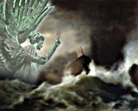
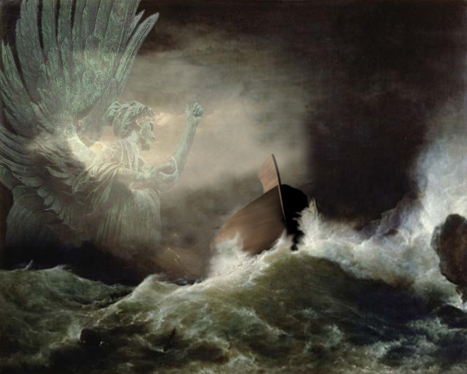
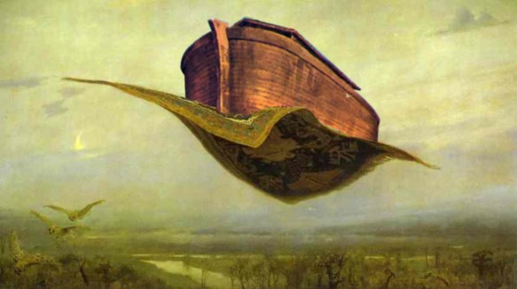

Noah's Ark: One Great Big Miracle?
Copyright Tim Lovett Mar 2006 | Home | Menu
Totally God, totally Noah, or somewhere in between?
|
 Assuming
Noah's
Ark and the Flood to be true, what next? Do we take the whole story as
miraculous from start
to finish, or do we assume Noah survived the ordeal with hard work and cunning? Assuming
Noah's
Ark and the Flood to be true, what next? Do we take the whole story as
miraculous from start
to finish, or do we assume Noah survived the ordeal with hard work and cunning?
Miracles
are in the story, yet Noah obviously built a real ship. So how can
we determine what was a miracle and what wasn't?
> See
More here
|

|
Explaining Away the Miraculous?
One charge directed at creationists is that they are attempting to explain everything
in purely naturalistic terms. For example, if Noah built the Ark in such a way that
the vessel was unsinkable, or set up special systems so the animals could feed and take care of
themselves, perhaps God is not even in the picture. Such comments might go something like
this;
"The way I see it, you can't study Noah's situation
scientifically because the whole thing was one great big miracle."
The implications are obvious: If miraculous intervention in Noah's day overruled the laws
of physics, then calculations are a waste of time. This means the
details of the story will remain vague, impervious to educated guesses or "most likely" scenarios. There is no earthly way we can know any more
than what scripture says (if even that much). We end up with about this much
detail:
God instructed Noah (somehow) to build an Ark of 300 x 50 x 30 mysterious cubits.
He built it by some means over an indefinite period of time, with or without
help. He used the puzzling gopher wood, and we have no idea of his tools,
the method of construction, the shape of the hull or where it was launched. The
flood was produced by some unknown mechanism that caused water to spurt out of
the ground at the same time as it rained. For the unknown number of animals, we
don't know how much food and
water was stored on board and to what degree the animals were in hibernation (if
at all). They somehow survived the flood but with no mention of caring for
the animals. When it was all over Noah removed the covering (whatever that is),
then they all got out - somehow.
One easy option is to fill in all the gaps with miracles.
God miraculously gave Noah detailed instructions to how to build the Ark and
miraculously helped him build it, regardless of Noah's understanding of
construction. It is not important to know whether he built it all himself or he
had hired help because God most likely empowered him supernaturally anyway.
Gopher wood may have had extraordinary properties, and how it was fabricated
into the a seaworthy wooden vessel would be have been a God thing. Not that it
really mattered all that much, because God miraculously protected the Ark during
the voyage. Noah probably had no idea how many animals were coming, yet they all
fitted miraculously into the Ark only days before the flood. The floodwaters
themselves were supernatural, so there is no explanation for where they came
from, or where they went. Most likely the animals hibernated supernaturally too,
so animal care was not an issue. Since God closed the door, he must have opened it, and that's how they got out.
What does the Bible say? There are obvious miracles in the Flood account, God brought the
animals and he closed the
door, but what about the rest of the story? Was the construction some sort of
miracle? Were the animals miraculously hibernating? Can we assume the vessel was
supernaturally kept afloat in the raging seas?

Can we apply the laws of physics here, or is the story of
Noah's Ark shrouded in the miraculous? (Big picture)
Definition of a Miracle
The word "miracle" is often used loosely, so we need to start with
a clear definition. If a miracle is anything that God does, then the existence of the universe is a miracle
as it is God who sustains it.1 So
in one sense, everything is a miracle. However, this is not the
normal use of the word.
Sometimes the word is used to describe things that remind us of God -
such as the miracle of childbirth. The word is even used to sell products (the latest miracle
diet), or to sell a story (a miraculous survival at sea). One media favorite, of course, is the "miracle of modern
science".
Then we have the miracle of salvation. When a person gets saved, they are a new
creation - the old has gone and the new has come. This is God intervening in an earthly life and
changing it, a
miracle by any reckoning .
Likewise, when God gives specific guidance or revelation, it is essentially a
miracle. However, these are not quite so scientifically testable as the raising of
dead people after several days, or walking on water, or having an axe-head float. While God is certainly capable of performing all manner of miracles,
he appears to reserve such intervention to within certain boundaries and
situations.2
Perhaps we could also define " fuzzy miracles" for those occasions when we are not quite sure whether
something was a miracle or just a coincidence. If someone prays for rain, is a
subsequent rainfall a genuine intervention or just a coincidence? By contrast,
when Lazarus came out of the tomb, it could never be written off as mere coincidence.
A useful definition of a miracle in the biblical sense, might be "an
extraordinary intervention by God in the world." or "an addition
to the normal laws of nature." 3. God
sustains everything, yet he determines it to run according to (relatively) predictable natural
laws. Gravity makes things fall to the ground, a natural law we treat with
respect. If things were not predictable like this we could never spot a miracle
when it happened.
A simple classification might look something like this;
|
Miracles: An Arbitrary
Classification
|
| Class |
Description |
Example |
| A |
An extraordinary intervention by God that overrules the
normal laws of nature |
Raising the dead, walking on water, physical intervention. |
| B |
An intervention by God that is not physically measurable
but is a probabilistic "certainty". |
Miracle of salvation, specific guidance. Gideon's fleece. |
| C |
Fuzzy miracle - could easily be a coincidence.
Probabilistically uncertain. |
Prayer for parking spot, general guidance. Drawing lots
(Acts 1). |
| D |
Background miracle - sustaining the universe |
Miracle of a new day |
Miracles in the Flood Account.
Where are the miracles in the Genesis Flood? From chapter six to eight of
Genesis
where did God interfere with the normal running of physical laws?
Explicit miracles.
- Gen 7:9, 15. God brings the animals to the Ark. (As predicted in Gen 6:20;
"two of every kind will come to you...", which is unnatural enough
to qualify as a miracle)
- Gen 7:16. God shuts Noah in; "and the LORD shut him in."
(Closure of the 'door' described in Gen 6:16)
- Gen 7:10. God causes the flood to happen (as foretold in Gen 6:17; "I
myself am bringing floodwaters...")
- Gen 8:1. God remembered Noah and made a wind to subside the water.
"And God made a wind..."
Another type of miracle is the communication Noah received from God. Mostly
instructions and warnings, but also including some commentary from God's
perspective. The exact nature of this communication is obscure. It may have been
anywhere in the spectrum from hearing God audibly on the one hand, to perceiving an inner
prompting on the other. When God makes a commitment never to flood the world again (Gen
8:21), he does so "in his heart". Obviously God would not be speaking
audibly in his heart. Was it "normal" for Noah
to hear God's voice audibly? The Bible describes Moses as unusual, since he
would talk to God as if talking to another person (audibly). It doesn't say this
about Noah. It doesn't even say Noah walked with God like his great grandfather
Enoch. What about dreams and visions? The Bible usually tells us when people
hear through dreams, and since there is no mention of Noah having dreams we
might exclude this form of communication. This leaves the trusty "still
small voice", the art of hearing God by getting to know him, paying
attention and acting in faith. That's how Christians hear God today.
However, when God pronounces the final blessing after they disembark, it
makes the most sense that it was an audible message, he was addressing Noah
and his sons. There is also a Biblical pattern that blessings are set in place
by speaking to the recipient.
God "spoke" to Noah at least five times;
- Gen 6:13-21. God gives Noah instructions for building the Ark, and
explains what will happen.
- Gen 7:1-4. God outlines the boarding procedure.
- Gen 8:15-17. God instructs Noah to exit the ark.
- Gen 8:21. God commits never to repeat the flood. (God says this 'in his
heart", so unlikely that this was audible to Noah)
- Gen 9:1-17. God blesses and instructs Noah and his sons. (An audience
implies audible communication)
Noah's Role in the Flood Account.
The Genesis flood story is very clear about Noah's responsibilities.
When God gave instructions he was delegating. Isn't that what
instructions are for? It would be meaningless to say (Gen 6:22) that Noah
did everything God commanded (build the Ark and gather the food) if
these tasks were shrouded in the miraculous. If we were to invoke miracles to
explain these parts of the story then we are not founding this idea on
Scripture, but on our opinion. For example, if we think Noah was too primitive
to build the Ark properly, then we might want to introduce a supernatural
element into the construction process. Genesis does not say this. God gave the
instructions and Noah did everything God commanded. So who built the Ark? Noah!
God told Noah to...
- Gen 6:14-16. Make the ark.
- Gen 6:21. Gather all the food.
- Gen 6:19-7:16. Take on board his family and the animals that will come to
him.
- Gen 8:16,17. Bring out his family and all the animals.
Other things Noah did...
- Sent out the birds to test for dry land.
- Removed the covering of the ark to see the dry ground.
|
Storyline Summary: Who did what?
|
| Reference |
Miracles (what God did) |
What Noah did |
What Happened |
| Gen 6:13-21 |
Ark building instructions (B) |
|
|
| Gen 6:14-16 |
|
Build the ark |
|
| Gen 6:21 |
|
Gather the food |
|
| Gen 7:1-4 |
Boarding instructions (B) |
|
|
| Gen 7:9,15 |
Brought the animals (A) |
|
|
| Gen 6:19-7:16 |
|
Load animals and family |
|
| Gen 7:16 |
Shut the door (A) |
|
|
| Gen 7:10 |
Initiated the flood (A) |
|
|
| Gen 7:17 |
|
|
Ark is buoyed |
| Gen 8:1 |
Brought a wind (A) |
|
|
| Gen 8:4 |
|
|
Ark runs aground |
| Gen 8:15-17 |
|
Send out birds |
|
| Gen 8:15-17 |
|
Remove covering |
|
| Gen 8:15-17 |
Exit instructions (B) |
|
|
| Gen 8:16,17 |
|
Unload animals and family |
|
| Gen 8:20 |
|
Sacrifice an offering |
|
| Gen 9:2 |
Animals get fear of man (A) |
|
|
| Gen 9:13 |
Set (gave) rainbow (A) |
|
|
| Gen 9:1-17 |
Blessed and instructed (A) |
|
|
Adding Miracles to the Story
It should be reasonable to call something a miracle when God does it, but give Noah the credit
for his undertakings whenever the Bible does.
But what do we do with the parts of the story that are not specifically mentioned? Do we add
miracles, or stay confined to naturalistic solutions? I suggest that miraculous
intervention is a special condition that God usually highlights in scripture,
just as he does in Genesis 6 to 8. So when no miracle is mentioned, it would be safest
to steer clear of miraculous solutions. Seeing miracles that aren't really there
is like superstition, a mystical approach to the Bible - a blurring or
miracles into magic.
Miracle of Staying Afloat? Take the issue of the Ark surviving the floodwaters.
It seems the Bible is silent about whether God miraculously sustained the Ark during
the voyage, yet this is one of the favorite places to add miraculous
intervention.8
The proportions of the
Ark indicate a vessel built for waves.
Waterproofing is detailed. Gopher wood is
specified. This seems to
imply a naturalistic solution, an Ark that can ride the waves without
supernatural help. If the vessel was to be suspended from the destructive forces
of the flood, why would Noah be required to put in all the extra effort of an
elongated shape? A shorter, wider hull gives the same space with a lot less
work. With these factors pointing to a hull designed to handle a storm, a
supernatural solution to seakeeping appears unnecessary. Why add it to
scripture? Because shipwrights had trouble making long wooden schooners? 6

In terms of outcomes, there is no way to distinguish between
a vague notion like "God kept the Ark safe", and an entirely fanciful
one. (Big picture)
Miracle of Hibernation? Another suggestion by the miracle-minded is
that the animals slept the voyage away. This is a handy way of dealing with the
issues of animal care with a limited crew. Trouble is, the Bible doesn't
actually say this. In fact, God gives a clear instruction to gather "all
food that is eaten" (Gen 6:21), for Noah's family and for the animals. This
means the animals had to eat, so they can't have been comatose the whole
voyage. They will require some care - dealing with their water
supply, food and waste. On the other hand, Noah was instructed
to build 'nests' in the Ark, so the animals weren't jumping, flapping, wriggling
and roaming in all directions. Nests imply confinement. This gives us some
boundaries for establishing what the animals may have been doing. They were
active enough to want food, but sedate enough to nest. The animals were
miraculously selected by God to enter the Ark, but the settling effect of darkness, confinement, and rocking motion is quite
natural. This is
also prior to animals having the 'fear of man' (Gen 9:2), which would be an
obviously advantage when keeping animals in captivity. Without the
'fear of man' the antediluvian animals would have been more like the
domesticated animals of today. 7
Miracle of Construction? With his pristine antediluvian DNA, Noah's abilities would be legendary even
from a purely natural point of view. Like many lead characters in the Bible, there is no doubt that Noah was empowered by the presence of God in his
life. So Noah's typical day might be full of class D and C miracles, where
Murphy's Law 4 is not quite so evident
(instead of cutting a piece of wood too short, you just happen to think to re-check the measurement...).
This seems to be God's preference too. He'd rather work amazing things
through his people by compiling a sum of little fuzzy miracles (like re-check a
measurement), working through
us to accomplish his will. Noah's experience is not a mystical ancient spiritual
event - Noah is a real man in history whose DNA makes up 25% of our own. When
God tells a Christian today to build an orphanage, we start by doing
it. After all, Noah was just a human. (Gen 9:21). Noah saw some of the most dramatic supernatural interventions ever witnessed,
but this does not mean we can add some extra miracles just because we think they
are needed. 5
After attempting to identify these "added
miracles", a common response is;
"I believe God was looking after Noah, and that miracles did
happen. I have no trouble believing that."
I am not trying to avoid miracles, or eliminate the supernatural
to make it more acceptable to a non-believer. The flood story requires miracles. If
this is a problem to the skeptic then sorry, but like the virgin birth, it
happened. I believe in miracles, (including modern Class A ones).
However, there are some clues that not everything was a miracle. God
told Noah to build a long ship, some 300 x 50 x 30 cubits. This is
very strange, because a shorter and fatter Ark of the same volume would be
much easier to build. (See Why
Such a Long Hull?)
So, if God was planning to look after the Ark during the voyage, why did he get Noah to build
such a long shape - with twice the wood and twice the effort? Why specify
something that looks so much like an ordinary ship, and thereby hide the
miracle, or imply that it was supposed to handle the waves?
It makes more sense to assume the instructions were
detailed enough for Noah to build an ocean going ship.
|
Legacy of Over-Presumed Miracles
After Kircher in the 1600's, Noah's Ark almost completely
escaped scientific inquiry until the 1900's. How can this be? There was no
shortage of Christians and there are enough details in the Flood account to make a reasoned
assessment. This is rather strange considering the significance of the story - the whole
world descended though Noah! (Gen 9:19)
My guess is that Christendom ignored
the power of methodical investigation because they had shrouded the story in the
miraculous. In the last few centuries the story of Noah Ark and the flood has
been under attack more than almost any other portion of
scripture.
How do Christians defend the survival of animals on board Noah's Ark? Glad
you asked. The geological record makes it very clear that there has been massive
catastrophe in the past - from the telling extent of
huge layers of rapidly lain strata, to the rapid burial of live creatures in the
prime of life. An historical Noah's Ark is virtually compulsory if any
land animal is to survive such conditions. How are the rest of the land animals
supposed to survive while this strata was being laid over whole continents? The
deluge-doubters must deny the extent of catastrophism as long as possible, their
only hope
is for the story to be swept under the magic carpet for
another 300 years. (oops, I mean miracle carpet).
References
1. The miracle of existence. God sustains all of
creation. Have you ever thought that when you see light you are actually seeing
the direct result of God's spoken words? "Let there be light". So your
retina is actually seeing God's words! While creation could be thought
of as an extension of God, (since every bit of it came from him), God is not
contained within the creation - he exists independently. Pantheism picks up the
intimacy of God and nature, but misses the truth (by an infinite distance) when
it attempts to shrink God down into the creation. (Pantheism: "God is
everything and everything is God" Owen, H. P. Concepts of Deity.
London: Macmillan, 1971.)
-
Rom 11:36 For
of him, and through him, and to him, are all things: to whom be glory for ever.
Amen.
-
Heb 1:3 Who
being the brightness of his glory, and the express image of his person, and
upholding all things by the word of his power, when he had by himself purged
our sins, sat down on the right hand of the Majesty on high:
-
1 Cor 8:6 But
to us there is but one God, the Father, of whom are all things, and we in
him; and one Lord Jesus Christ, by whom are all things, and we by him.
Return to text
2. Economy of Miracles. While God is certainly capable of performing miracles left, right and center,
he seems to restrain himself to some extent. An attitude of always seeking miracles
is condemned as a symptom of sinfulness - seeking miracles instead of the miracle
maker.
-
Matthew 12:39 He answered, "A wicked and
adulterous generation asks for a miraculous sign! But none will be given it
except the sign of the prophet Jonah.
-
John 4:48 (NKJV) "Unless you people see miraculous
signs and wonders," Jesus told him, "you will never believe."
-
1 Corinthians 1:22-23 (NKJV) For Jews request a sign,
and Greeks seek after wisdom; but we preach Christ crucified, to the Jews a
stumbling block and to the Greeks foolishness,
-
John 20:29 (NIV) Then Jesus told him, "Because you
have seen me, you have believed; blessed are those who have not seen and yet
have believed."
Conversely, there is no scriptural decree that miracles
died out with the Apostles. If miracles are obsolete then it would be inconsistent to make your
requests known to God. How can he answer a prayer if he is not allowed to
do anything?
Return to text
3. Dr Jonathan Sarfati. Miracles and Science. Audio
recording
at http://www.gospelcom.net/cgi-bin/hurl?f=aig/Special/sc-01-10-01a-jsarfati.rm
Return to text
4. Murphies Law, popular in manufacturing and
engineering. There are many variations, but essentially "If anything can go
wrong, it will". The concept behind it is to attempt to foresee problems
and not to expect things to work unless you have addressed everything that might
go wrong. Return to text.
5. John wrote some harsh warnings about adding or taking
away from scripture. An awful lot of people must be banking on these words
applying to the book of Revelation and not the whole Bible.
Rev 22:18,19 For I
testify to everyone who hears the words of the prophecy of this book:
If anyone adds to these things, God will add to him the plagues that
are written in this book; and if anyone takes away from the words
of the book of this prophecy, God shall take away his part from the
Book of Life, from the holy city, and from the things which are
written in this book.
So, what is the risk that claiming a supernaturally buoyed Ark is not adding to scripture?
Return to text.
6. The often quoted example of an over-length wooden
ship; Wyoming, six masted wooden hulled schooner; L/B/D: 329.5 × 50.1 × 30.4
(100.4m × 15.2m × 9.3m). Tons: 3,730 tons. Built by: Percy & Small, Bath,
Me.; 1909. It was one of the largest wooden hulls ever built, and had the
greatest tonnage of any wooden schooner built (the only larger schooner
was the steel-hulled Thomas W. Lawson, although the 1853 clipper The Great
Republic was 335ft and 4555 tons), and she was the last of ten six-masted
schooners built in New England. At the time of its launch in 1909, East Coast
shipbuilders had launched 311 four-masted schooners, 45 five-masters, 10
six-masters, and the seven-masted Lawson. Steamships were taking over
short coal routes but Wyoming escaped this fate by sailing on ever
longer routes. On March 3, 1924, she departed Norfolk for St. John, New
Brunswick. On the 24th she anchored off the Pollock Rip Lightship to ride out a
nor'easter, but she sank with the loss of her 13 crew, including Captain Charles
Glaesel. Ref: Haskell, "Glamorous Six-Masters." Parker, Great
Coal Schooners of New England. Ships
of the World Historical Encyclopedia. The ancient Greek triremes had a
highly refined hull
construction never seen in the European carvel hull, and in the 1400's the
Chinese were building ships that were almost certainly larger than the European
and American wooden ships. Compare
Ships Return to text
7. Animals and carnivory. After the flood, God gave Noah
and his sons (i.e. humans) permission to eat meat (Gen 9:3). He also put the
fear of man into the animals (Gen 9:2), which seems pretty logical. Did animals
display any carnivorous behavior before the flood? The fossil record certainly
says so. Death and bloodshed were introduced by Adam, so after that some animals
learnt to eat flesh. Domestication is not related to whether an animal is
carnivorous, consider dogs and cats. The 'wild animal' factor could have a
strong bearing on how well they perform in captivity. Today, it is much easier to keep
farm animals in captivity than some creature fresh from the jungle. Return
to text
8. Genesis 8:1, says "God remembered
Noah" and then it goes on to talk about the wind and subsidence of the
floodwaters. The word for remembered is zakar which means remembered.
Funny that. It has been suggested that this phrase implies some sort of special
protection, such as buoying the vessel or simply steering it away from danger.
Either way, this would still be a supernatural intervention (Class A miracle), helping the Ark
to do the right
thing on the water. Try as I may, I can't see 'supernaturally protected' in zakar.
Besides, if ever there was a need for special protection it would be during launch
or beaching, not in the middle of the voyage. It seems far more reasonable to
take Genesis 8:1 to mean that God's "remembering" led to the wind,
since it is mentioned immediately after. (A similar verse is Gen 30:22 where God
remembered Rachael and opened her womb. Obviously it wasn't open before was
it?). Why not let zakar mean
"remembered" like it does all the other 233 times in the Bible, and
let the Ark do the floating? [Zakar: Blue
Letter Bible. "Dictionary and Word Search for 'zakar (Strong's 02142) '
" . Blue Letter Bible. 1996-2002.
22 Mar 2006. <http://www.blueletterbible.org/cgi-bin/words.pl?word=02142&page=1>]
Return to text
www.worldwideflood.com
{kind=link}
{kind=link}